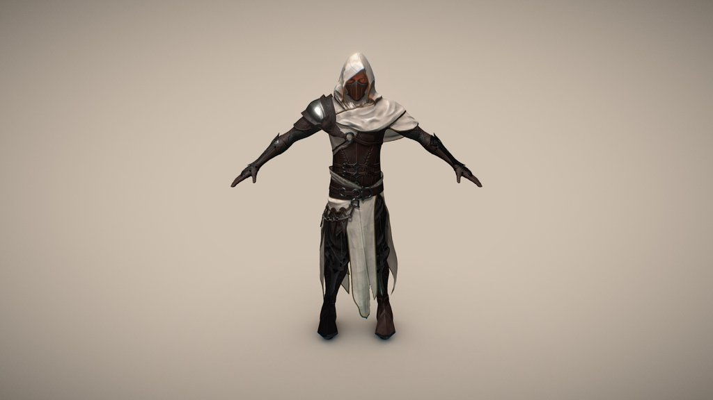

布料与单肩轻装
白色布料、收腰皮革、较小的单肩甲和护臂。先作为服装候选，后续穿戴仍以现有脸、发型、体型和双剑动作来评判。
Assassin Character Model — glenfernandes66，CC BY 4.0。作者原模型预览；本项目尚未下载原模型，未改造、绑定或换装。
两套被淘汰的新服装继续归档。这里保留已认可的蓝银双剑和原角色，先比较一套更收敛的布料、皮革与单肩轻甲方向。

白色布料、收腰皮革、较小的单肩甲和护臂。先作为服装候选，后续穿戴仍以现有脸、发型、体型和双剑动作来评判。
Assassin Character Model — glenfernandes66，CC BY 4.0。作者原模型预览；本项目尚未下载原模型，未改造、绑定或换装。

武器造型、金属反射和原来的轻盈双剑动作保持为基准。服装候选需要与它们协调，资源预览不代表最终角色效果。
Crystal Elemental Sword — nodgerty，CC BY 4.0；原角色与动作来自项目已拥有的 Epic Games Paragon 资源。
当前阶段：筛资源。尚无这套服装的 UE 穿戴结果，也没有把作者人物的脸、兜帽或武器定为 Lightblade 新造型。